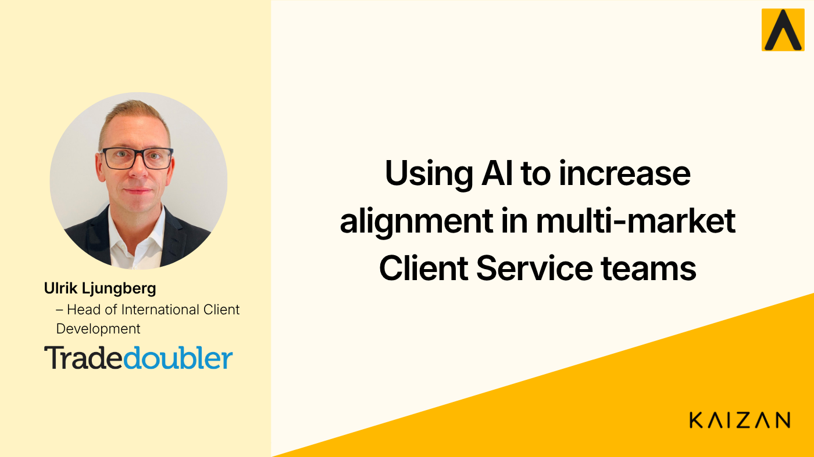

Q&A — Using AI to increase alignment in multi-market Client Service teams

Q&A — Using AI to increase alignment in multi-market Client Service teams
Looking after an expanding team which traverses a global footprint is no easy task, layering in the complexity of client service management with clients and stakeholders with different requirements and ways of working makes this task even more challenging. But, with new Client Services (CS) Platforms coming to market which improve the way CS managers engage with clients, managing the professional services side of the business is becoming easier. Multi-market client teams create challenges, but managing CS teams where there is a significant amount of remote working compounds the problem and creates risks with visibility and alignment.
Boasting 15 offices worldwide and with a footprint in 84 countries, performance marketing and technology company, Tradedoubler, are no strangers to the challenges of managing a team spread across multiple regions. Adding to that complexity are teams who work across the same client and multiple regions!
Specialising in performance marketing, Tradedoubler amongst other services, also offers clients affiliate, influencer, app and programmatic marketing. Tradedoubler have been using Kaizan’s Client Service Platform as a way to measure client sentiment and health, as well as aggregate comms channels for increased alignment and visibility. This isn’t easy at the best of times but AI has been simplifying the process and continuously improving their client relationships.
Kaizan is an AI powered Client Service Platform which empowers teams to increase the metrics they care about most; client satisfaction, profitability, revenue and their own productivity and knowledge. CEO and Co-Founder of Kaizan, Glen Calvert, caught up with Ulrik Ljungberg — Head of International Client Development, at Tradedoubler to talk through some of the nuances and benefits of implementing AI within a global team.
Q. Hi Ulrik, it’s great to chat with you. Tradedoubler have been on a remarkable journey implementing AI into their business. Can you tell us a bit about yourself, what your team does and how you’ve been using AI?
A. Of course, I head up Tradedoubler’s International Client Development Team. We’re responsible for Tradedoubler’s international clients across all countries and the team is spread out across all our offices. This adds complexity as there can be a number of different contacts for the same client at different levels of decision making and the client often has multiple contacts at Tradedoubler, so this requires a sophisticated approach with our clients. We are already seeing the benefits of using AI in our business to help us manage this complexity. We are still only at the beginning of the journey and I’m sure AI will help us drive better results and improve relationships with our clients as we continue to roll it out.
Q. It’s fantastic that you’ve already experienced the benefits of implementing an AI platform into your CS team. It’s really a new area of AI which we’re witnessing, where the professional services element of the business is being supported and provided with rich data. What are some of the ways you have experienced those benefits first hand at Tradedoubler?
A. One of the notable areas for us has been understanding client sentiment better — It’s super important to understand what our clients think about the work that we do and equally important for us to be constantly monitoring this, using AI means that we really have our finger on the pulse. This works both when the sentiment is improving but also when it’s going down. We have found the sentiment score can be used internally to better understand what we’re doing right and where we can improve. It’s also a great tool for internal 121’s with the team.
Q. Understanding client sentiment is a game changer, because in the worst case scenario you can step in preventatively and isolate where a problem might come from. In the best case scenario if you’re seeing client sentiment improving, CS managers can focus on selling products which are useful or relevant to the client. If the sentiment and the relationship are healthy, it provides a good opportunity to start those conversations. Teams can be freed up from some of the admin to think strategically and be action oriented. Have you seen much of this since implementing AI?
A. Definitely, implementing AI has helped improve professionalism. We want to be as organised and action driven as possible. Having an AI tool, such as Kaizan, means we can focus more on the dialog with the client. We are finding as Kaizan generates a transcript of every client meeting and includes the summary and actions from those meetings, it has allowed the team to have that extra focus time. Also, being able to send out timely follow up notes from all our meetings which include clear actions not only makes everyone accountable but also shows professionalism.
Q. It’s a great point, adding that level of professionalism into every interaction is important to maintaining healthy client relationships and client excellence. Obviously health relationships lead to client retention and increased revenues so it’s a win-win. How are you finding the data points you’re getting from AI supporting your CS teams?
A. We definitely find that we can improve client relationships with objective data points and we can get those data points from Kaizan. It’s not all complex data either, some of those data points allow us to understand how much time we spend on our clients and how often we interact with them which is super important to know. We want to remain relevant and be top of mind with our clients so being able to monitor our client interactions is super important. Given how global we are, with some of our clients we have a lot of contacts client side and it’s important that we touch base with all of them, AI allows us to track whether we’re doing a good job of maintaining those relationships.